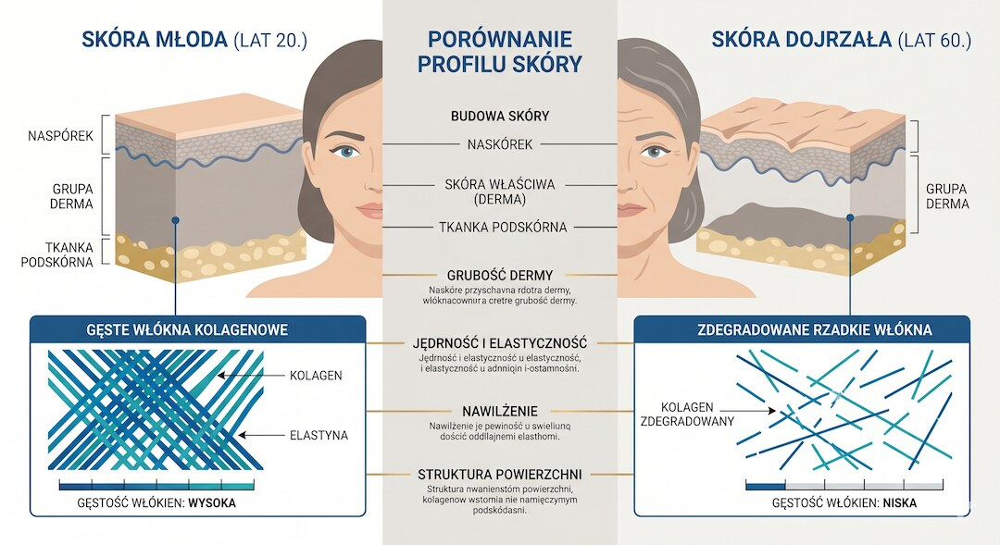
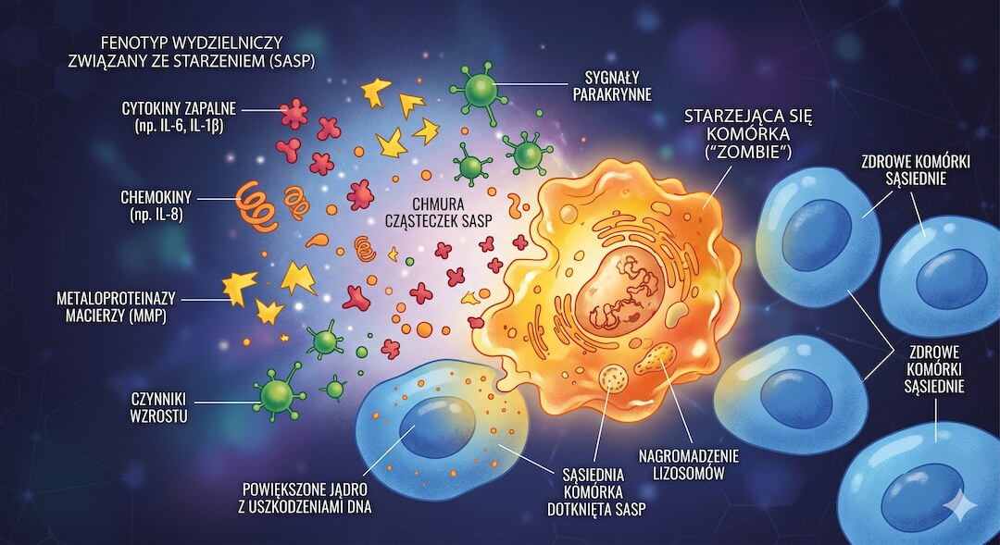
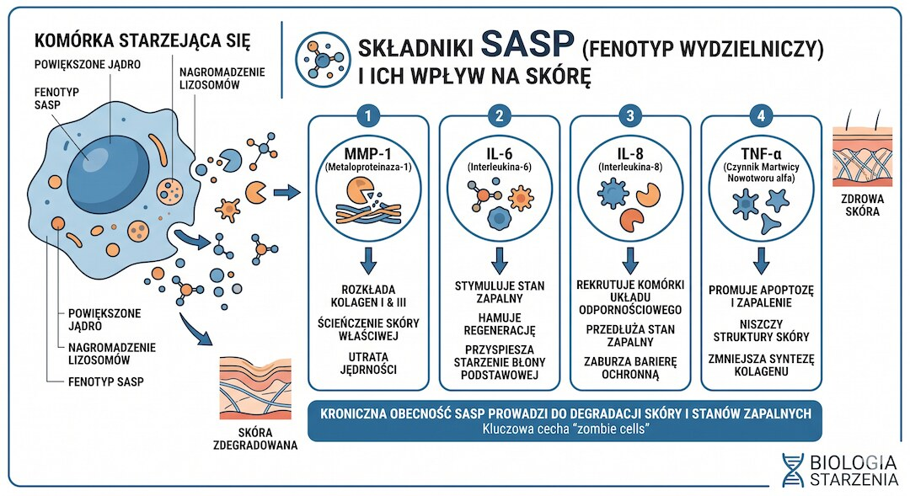
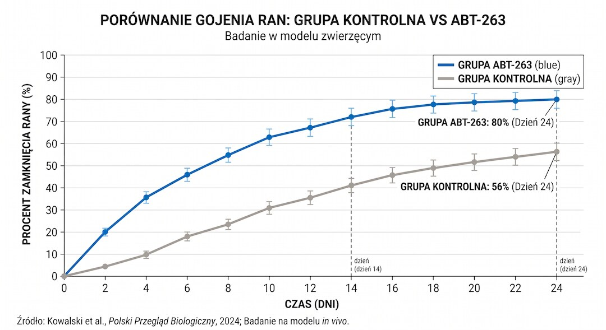
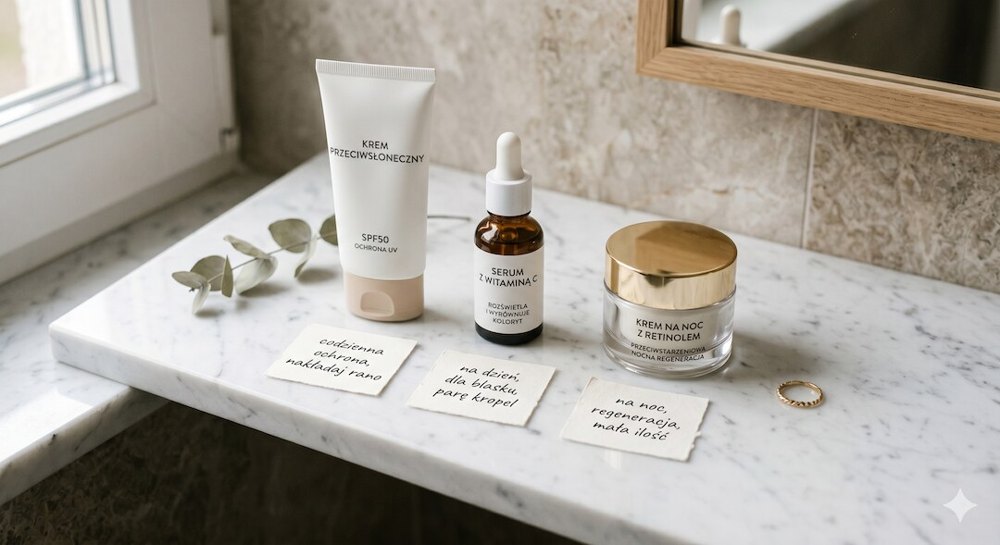

Twoja skóra po pięćdziesiątce nie starzeje się z powodu pecha ani złej genetyki. Starzeje się dlatego, że wypełnia się komórkami, które powinny były dawno umrzeć — a zamiast tego siedzą w tkance i zatuwają wszystko dookoła. Naukowcy nazywają je komórkami senescencyjnymi. Potocznie: komórki zombie. Badanie opublikowane w grudniu 2024 roku przez zespół z Boston University wykazało, że można je selektywnie usunąć ze skóry miejscowym lekiem — i że po ich usunięciu skóra naprawia się wyraźnie szybciej. To nie jest kosmeceutyczny marketing. To peer-reviewed.
Szybka odpowiedź
Komórki zombie, czyli senescencyjne komórki w skórze po 50-tce, nie obumierają, lecz wydzielają toksyczny profil SASP niszczący kolagen i elastynę, a choć badanie z Boston University z 2024 roku wykazało, że miejscowy lek ABT-263 przyspiesza ich usuwanie i gojenie ran u myszy, u ludzi kluczowa pozostaje sprawdzona ochrona SPF, retinol oraz witamina C.
Kluczowe wnioski
- Komórki senescencyjne (zombie) stanowią nawet 15% wszystkich komórek w skórze osób po 65. roku życia — i aktywnie niszczą otaczającą tkankę przez wydzielanie SASP.
- SASP zawiera enzymy MMP rozkładające kolagen i elastynę oraz cytokiny prozapalne IL-6 i IL-8 — to one stoją za zmarszczkami, wiotkością i wolniejszym gojeniem ran.
- Badanie z Boston University (grudzień 2024) wykazało, że miejscowy ABT-263 przyspiesza gojenie ran u myszy (80% vs 56%), ale lek ten nie jest jeszcze dostępny dla ludzi.
- Co działa dziś: SPF codzienny, witamina C miejscowo, retinol, dieta bogata w polifenole i Omega-3 — to sprawdzone sposoby spowalniające akumulację komórek zombie w skórze.
Co się naprawdę dzieje ze skórą po pięćdziesiątce?
Skóra starzeje się na dwa sposoby naraz. Pierwszy to starzenie wewnętrzne — wynikające z biologii komórki: skracania telomerów, narastających błędów w DNA i spowolnienia podziałów. Drugi to starzenie zewnętrzne — od UV, zanieczyszczeń, papierosów i stresu oksydacyjnego. Po pięćdziesiątce oba procesy nakładają się i wzajemnie się napędzają.
Efekt, który widzisz w lustrze — zmarszczki, utrata napięcia, nierówny koloryt, wolniejsze gojenie drobnych ran — to wynik strukturalnych zmian w skórze właściwej. Fibroblasty, komórki produkujące kolagen i elastynę, zaczynają pracować gorzej albo przestają w ogóle. Ilość kolagenu typu I — tego od sprężystości — spada wyraźnie po czterdziestce i nie zatrzymuje się. Warstwa skóry właściwej dosłownie się przerzedza.
Fibroblasty nie tylko przestają produkować kolagen — aktywnie go niszczą. I tu wchodzą do gry komórki zombie. Ich rola w starzeniu skóry to jeden z gorętszych tematów dermatologii molekularnej ostatnich lat. Jak zapalenie na poziomie komórkowym wpływa na całe ciało opisujemy szerzej w artykule o diecie po 50-tce.

Kim są 'komórki zombie' i dlaczego nie chcą umierać?
Komórka senescencyjna to komórka, która przestała się dzielić i weszła w trwały stan zatrzymania — ale nie umarła. W sprawnym organizmie komórki, które się zestarzeją lub ulegną uszkodzeniu, trafiają na ścieżkę apoptozy i są sprzątnięte przez układ odpornościowy. U komórek senescencyjnych ten mechanizm nie działa. Są odporne na sygnały śmierci.
Sama senescencja nie jest zła. W młodym organizmie pełni ważną funkcję: blokuje potencjalnie nowotworowe komórki przed niekontrolowanym podziałem i sygnalizuje układowi odpornościowemu, żeby je usunął. Problem pojawia się, gdy ten układ słabnie z wiekiem i nie nadąża z porządkowaniem. Komórki zombie zaczynają się gromadzić. W skórze osób po 65. roku życia mogą stanowić nawet 15% wszystkich komórek w naskórku i skórze właściwej. To nie są marginalne ilości.
I nie siedzą cicho. Wchodzą w stan, który naukowcy nazwali SASP — Senescence-Associated Secretory Phenotype. Wyobraź sobie komórkę, która przestała pracować, zajmuje miejsce i zamiast cicho czekać — krzyczy. Wydziela cytokiny zapalne, enzymy niszczące tkankę i sygnały, które w sąsiednich zdrowych komórkach indukują kolejną senescencję. SASP jest zaraźliwy jak zły humor w biurze.

Co dokładnie SASP robi ze skórą — twarde dane?
SASP nie jest abstrakcją. Zawiera konkretne molekuły z konkretnym działaniem. Najlepiej zbadane to metaloproteinazy macierzy — MMP-1, MMP-2, MMP-9, MMP-12. Enzymy, które dosłownie trawią włókna kolagenowe i elastynowe. Starzejące się fibroblasty skóry wydzielają je w niekontrolowany sposób, rozkładając więcej kolagenu, niż skóra jest w stanie odbudować. Stąd zmarszczki, utrata objętości i wiotkość — to nie metafora, to enzymatyczna destrukcja.
Do tego dochodzą cytokiny prozapalne: IL-6, IL-8, IL-1β, TNF-α. W skórze seniora są wydzielane chronicznie na niskim poziomie — to ten sam mechanizm co inflammaging w całym ciele, tylko zlokalizowany lokalnie. IL-6 jest tu szczególnie istotna: promuje rozpad kolagenu, hamuje jego syntezę i zaburza prawidłową odpowiedź immunologiczną skóry. Efekt: skóra staje się bardziej podatna na infekcje, gorzej radzi sobie z UV i wolniej goi się po każdym, nawet drobnym urazie.
Utrata kolagenu to nie tylko estetyka. Kolagen 7 i 17, oba niszczone przez SASP, odpowiadają za integralność połączenia naskórek-skóra właściwa. Ich niedobór osłabia skórę mechanicznie — łatwiej o rany, wolniejsze gojenie, wyższe ryzyko zakażeń. To jeden z powodów, dla których drobne zadrapanie u osoby starszej może stać się poważnym problemem.
- MMP-1, MMP-2, MMP-9, MMP-12 — enzymy trawiące kolagen i elastynę
- IL-6, IL-8, IL-1β — cytokiny napędzające przewlekłe zapalenie w skórze
- TNF-α — blokuje syntezę nowego kolagenu
- TGF-β — zaburza gojenie ran i przebudowę blizn
- CCN1 (CYR61) — białko rozregulowujące homeostazę kolagenu w dermie
- VEGF — promuje nieprawidłowe naczynia krwionośne

Czym jest ABT-263 i co dokładnie zrobiło badanie z Boston University?
ABT-263 to inaczej nawytoclax — lek pierwotnie opracowany w onkologii. Jego mechanizm polega na blokowaniu białek z rodziny BCL-2, które u komórek senescencyjnych działają jak tarcza chroniąca je przed śmiercią. Gdy ABT-263 blokuje tę tarczę, zombie traci ochronę i w końcu wchodzi na ścieżkę apoptozy. Leki działające tym mechanizmem mają swoją nazwę: senolizy (senolytics).
Problem z ABT-263 w formie ogólnoustrojowej to efekty uboczne — przede wszystkim małopłytkowość, czyli spadek liczby płytek odpowiedzialnych za krzepnięcie. Zespół z Boston University zapytał: co jeśli aplikować go bezpośrednio na skórę? W grudniu 2024 roku opublikowali wyniki.
Przez 5 dni nakładali ABT-263 w DMSO (substancja wspomagająca penetrację przez skórę) na skórę 24-miesięcznych myszy — odpowiednik bardzo starczego człowieka. Potem zadali ranę i obserwowali gojenie przez 24 dni. Wyniki były czytelne: obniżone poziomy markerów senescencji p16 i p21, zmniejszona aktywność SA-β-gal i zmieniony profil ekspresji genów — aktywowały się szlaki syntezy kolagenu, angiogenezy i przebudowy macierzy pozakomórkowej.
Najważniejsza liczba: w 24. dniu po zranieniu całkowite zagojenie rany obserwowano u 80% myszy leczonych ABT-263 — wobec 56% w grupie kontrolnej. To znacząca różnica. Więcej o przydatnych badaniach piszemy w artykule o badaniach krwi po 50.

Czy ABT-263 na skórę trafi kiedyś do ludzi — i kiedy?
Na to pytanie uczciwa odpowiedź brzmi: nie wiadomo i na pewno nie wkrótce. Badanie Shvedovej i zespołu jest interesujące naukowo, ale to jedno badanie na myszach. Mysie modele starzenia skóry mają znane ograniczenia — skóra myszy różni się od ludzkiej grubością, gęstością przydatków i tempem obrotu komórek. Wyniki muszą zostać powtórzone na ludziach: najpierw w fazie I (bezpieczeństwo), potem w fazie II i III (skuteczność).
Miejscowe formy dermatologiczne ABT-263 nie są na razie w żadnym zarejestrowanym badaniu klinicznym dla wskazania starzenie skóry — stan na początku 2025 roku. Warto też odnotować, że ABT-263 wywołał w badaniu przejściową reakcję zapalną i napływ makrofagów. To znaczy, że mechanizm usuwania zombie nie jest czysty i wymaga optymalizacji.
Szersza klasa senolytyków jest aktywnie badana. Kombinacja kwercetyny z dasatynibem to najczęściej testowany duet u ludzi — kilka wczesnych badań klinicznych dało obiecujące wyniki dla tkanek płucnych i nerkowych, choć danych dermatologicznych z RCT wciąż brak. Fisetin ze truskawek i nawytoclax nadal są głównie w fazie przedklinicznej dla wskazań skórnych. To jest aktywny front naukowy i warto go śledzić — ale w aptece nie ma jeszcze nic, co naprawdę czyściłoby komórki zombie ze skóry. Podobnie ostrożnie trzeba czytać newsy o terapii ER-100 i cofaniu starzenia komórek oka: przełom naukowy nie oznacza jeszcze dostępnego leczenia anti-aging.
Co UV robi z komórkami skóry i dlaczego SPF to naprawdę nie jest marketing?
Promieniowanie UV to najlepiej udokumentowany czynnik przyspieszający senescencję komórek skóry — wyraźnie silniejszy niż samo starzenie biologiczne. Mechanizm jest bezpośredni: UVB powoduje uszkodzenia DNA w keratynocytach i fibroblastach, które aktywują szlak p53→p21, wprowadzając komórkę w senescencję. Jeden intensywny dzień na słońcu może wprowadzić w senescencję wielokrotnie więcej komórek niż miesiąc spokojnego starzenia się biologicznego.
Efekt chroniczny ma swoją nazwę: photoaging. Szacuje się, że odpowiada za 80–90% widocznych zmian skórnych, które przypisujemy starzeniu. Zmarszczki, przebarwienia, utrata sprężystości, pogrubiały relief — w większości to dekady ekspozycji na słońce, nie upływ lat. Badania na bliźniętach jednojajowych z różną historią ekspozycji UV są w tej kwestii jednoznaczne.
SPF 30–50 stosowany codziennie — nie tylko latem i nie tylko na urlopie, lecz przez cały rok — to jedno z najlepiej udowodnionych działań antystarzeniowych dostępnych bez recepty. Randomizowane badanie australijskie z 2013 roku wykazało, że codzienna aplikacja przez 4,5 roku widocznie zmniejszyła postęp fotostarzenia w porównaniu z grupą używającą kremu okazjonalnie. Filtr nie tylko zapobiega — aktywnie spowalnia akumulację komórek zombie w skórze. Więcej o fotostarzeniu dowiesz się z artykułu o badaniach krwi po 50.
Co możesz zrobić teraz — co działa, a co jest tylko obietnicą?
Skoro senolizy dermatologiczne są jeszcze w fazie badań, co ma sens dziś? Kilka substancji i nawyków ma solidne dowody — nie wszystkie są rewolucją, ale stosowane konsekwentnie dają różnicę mierzalną w badaniach skóry i biopsjach.
Retinol i retinoidy to jedyne składniki aktywne w kosmetyce z potwierdzoną w wieloletnich RCT zdolnością do zwiększania produkcji kolagenu i odwracania części zmian fotostarzenia. Tretinoin (kwas retinowy, na receptę) ma najsilniejsze dane — regularne stosowanie przez 6–12 miesięcy poprawia grubość skóry właściwej i redukuje ekspresję MMP-1. Retinol OTC działa słabiej, ale widocznie. Ograniczenie: podrażnienie i nadwrażliwość na UV — zawsze wieczorem, z SPF rano.
Witamina C miejscowo w stężeniu 10–20% neutralizuje wolne rodniki generowane przez UV, hamuje MMP-1 i stymuluje syntezę kolagenu przez fibroblasty. Badania histologiczne potwierdzają wzrost gęstości kolagenu w skórze po 3–6 miesiącach regularnej aplikacji. Witamina C z witaminą E i kwasem ferulowym działa synergicznie — to kombinacja zbadana przez Duke University z dobrymi wynikami.
Dieta bogata w polifenole i Omega-3: fisetin ze truskawek i kwercetyna z cebuli mają działanie senolityczne w hodowlach komórkowych. Ich skuteczność jako dermosenolytyków u ludzi nie jest potwierdzona w RCT — ale oba redukują systemowy stan zapalny, co pośrednio ogranicza SASP w skórze. Omega-3 z tłustych ryb ograniczają produkcję prostaglandyn prozapalnych w skórze. Dieta nie zastępuje pielęgnacji, ale ją wspiera od środka. Szczegóły w artykule o diecie po 50-tce.
Aktywność fizyczna: regularne cardio zmniejsza systemowy poziom IL-6 i CRP i ma udokumentowany wpływ na kondycję skóry. Badanie z 2014 roku wykazało, że aktywni fizycznie po 65. roku życia mają skórę właściwą o profilu histologicznym podobnym do osób w wieku 20–40 lat. Więcej o tym w artykule o treningu siłowym po 50-tce.
Sen i stres: kortyzol w chronicznie podwyższonych poziomach aktywuje MMP-1 i hamuje syntezę kolagenu. Niedobór snu przyspiesza akumulację uszkodzeń DNA w komórkach skóry. Żadna z tych zależności nie jest zaskakująca — ale warto wiedzieć, że sen i stres to nie lifestyle tips, lecz biologia skóry zapisana w biopsjach. Zobacz nasz poradnik o śnie po 50-tce.
- SPF 30–50 każdego dnia przez cały rok — ogranicza indukcję senescencji przez UV
- Retinol lub retinoidy wieczorem — potwierdzone w RCT zwiększenie produkcji kolagenu
- Witamina C miejscowo 10–20% rano — antyoksydant i stymulator kolagenu
- Dieta bogata w polifenole (kwercetyna, fisetin) i Omega-3 — redukuje systemowy SASP
- Regularne cardio co najmniej 3x w tygodniu — poprawia profil histologiczny skóry
- Sen 7–8 godzin — ogranicza kortyzol i daje czas na naprawę DNA w komórkach skóry

Najczęściej zadawane pytania
Co to są komórki zombie w skórze i jak wpływają na starzenie?
Komórki zombie (senescencyjne) to starzejące się komórki, które przestały się dzielić, ale nie obumarły. Wydzielają one toksyczny zestaw SASP, w skład którego wchodzą enzymy MMP niszczące kolagen i elastynę oraz cytokiny prozapalne (IL-6, IL-8). W skórze osób po 65. roku życia stanowią one nawet 15% wszystkich komórek, co prowadzi do wiotkości i zmarszczek.
Co wykazało badanie nad lekiem ABT-263 na skórę z 2024 roku?
Badanie z Boston University (grudzień 2024) na myszach wykazało, że miejscowa aplikacja leku ABT-263 (nawytoclax) przez 5 dni usunęła markery senescencji i znacząco przyspieszyła gojenie ran. W 24. dniu rany były całkowicie zagojone u 80% myszy leczonych preparatem, w porównaniu do zaledwie 56% w grupie kontrolnej. Badanie wymaga jednak potwierdzenia u ludzi.
Czy lek ABT-263 na skórę jest już dostępny dla ludzi?
Nie, lek ABT-263 (nawytoclax) nie jest obecnie dostępny w aptekach jako preparat dermatologiczny dla ludzi. Badania z 2024 roku zostały przeprowadzone wyłącznie na modelach mysich. Ponadto, ogólnoustrojowe stosowanie tego leku w onkologii wykazuje poważne efekty uboczne, takie jak małopłytkowość, co wymaga dalszych prac nad bezpieczeństwem formy miejscowej.
Dlaczego skóra po 50-tce starzeje się szybciej i gorzej goi?
Głównym powodem jest kumulacja komórek zombie (senescencyjnych) oraz spadek aktywności fibroblastów produkujących kolagen i elastynę. Wydzielany przez komórki senescencyjne profil SASP zawiera enzymy metaloproteinazy (MMP), które aktywnie degradują strukturę skóry właściwej. Dodatkowo spadek poziomu hormonów po 50. roku życia oraz chroniczne stany zapalne (inflammaging) upośledzają naturalne mechanizmy naprawcze.
Czy codzienne stosowanie kremów z SPF spowalnia starzenie skóry?
Tak, codzienne stosowanie filtrów SPF 30 lub 50 to jedno z najlepiej udowodnionych działań antystarzeniowych. Promieniowanie UV jest najsilniejszym zewnętrznym czynnikiem indukującym senescencję (powstawanie komórek zombie) w keratynocytach. Randomizowane badania kliniczne (RCT) potwierdzają, że regularna ochrona przeciwsłoneczna przez cały rok widocznie spowalnia proces fotostarzenia skóry oraz redukuje ryzyko powstawania głębokich zmarszczek.
Przy starzeniu komórkowym łatwo patrzeć tylko na molekuły, ale nocna regeneracja nadal jest fundamentem. Zobacz Centrum Snu po 50-tce.
Źródła
- Shvedova M et al. (2024) — Topical ABT-263 treatment reduces aged skin senescence and improves subsequent wound healing. Aging (Aging-US), Vol. 17, Issue 1
- Wang AS, Dreesen O (2018) — Biomarkers of Cellular Senescence and Skin Aging. Frontiers in Genetics
- Frontiers in Immunology (2024) — Exploring mechanisms of skin aging: insights for clinical treatment
- Frontiers in Medicine (2024) — Skin senescence — from basic research to clinical practice
- Frontiers in Physiology (2023) — Skin aging from mechanisms to interventions: focusing on dermal aging
- Vasquez R et al. (2021) — How good is the evidence that cellular senescence causes skin ageing? PMC / Ageing Research Reviews
- PMC (2025) — Recent advances in dermal fibroblast senescence and skin aging: mechanisms and therapeutic strategies
- Hughes MC et al. (2013) — Sunscreen and Prevention of Skin Aging: A Randomized Trial. Annals of Internal Medicine
- Crane JD et al. (2015) — Exercise-stimulated interleukin-15 and skin metabolism. Journal of Cell Biology
- Soleymani T et al. (2018) — A Practical Approach to Chemical Peels and retinoids reference. Journal of Clinical and Aesthetic Dermatology
Uwaga: Artykuł ma charakter informacyjny i edukacyjny. Nie zastępuje konsultacji lekarskiej, diagnozy ani leczenia.